01Infrastructure
Cloud & Serverless Systems
Scheduling, orchestration, auto-scaling, resource management, and efficient execution for cloud-native and serverless workloads.
DINA Lab · IUST
We study the infrastructure and software techniques needed to make distributed applications adaptive, resource-aware, and trustworthy across cloud, edge, and federated environments.
01 / Mission
Modern applications no longer live in one place. Computation moves between centralized clouds, resource-constrained edge nodes, and distributed data owners. DINA Lab investigates how these systems can coordinate resources, adapt to changing conditions, and remain dependable as they scale.
At IUST, the lab connects distributed infrastructure with intelligent and trustworthy software: from cloud and serverless orchestration to edge computing, federated learning, computational trust, and automated software evolution.
02 / Research directions
Five connected directions frame the lab's current research identity. They are intentionally broad enough to support evolving projects while staying anchored in the group's established software and distributed-systems work.
Scheduling, orchestration, auto-scaling, resource management, and efficient execution for cloud-native and serverless workloads.
Placement, offloading, and coordination across heterogeneous resources from centralized cloud platforms to the network edge.
Learning across decentralized participants while accounting for distributed data, system heterogeneity, and communication constraints.
Exploring distributed approaches to adapting and coordinating large language models across multiple participants and compute environments.
Context-aware behavior, software refactoring, and computational trust provide established foundations for software quality and adaptation alongside the lab's current cloud, edge, federated-learning, and LLM directions.
03 / Research lens
Across cloud, edge, and distributed participants, placement and orchestration determine latency, cost, and resource efficiency.
Adaptive infrastructure must respond to workload, context, and resource changes without relying on a single static operating point.
Trust, context, software quality, and automated evolution matter alongside raw systems performance.
04 / People
Current members are listed from the confirmed DINA Lab roster. Academic roles and thesis topics will be added as they are formally confirmed. People & supervision →
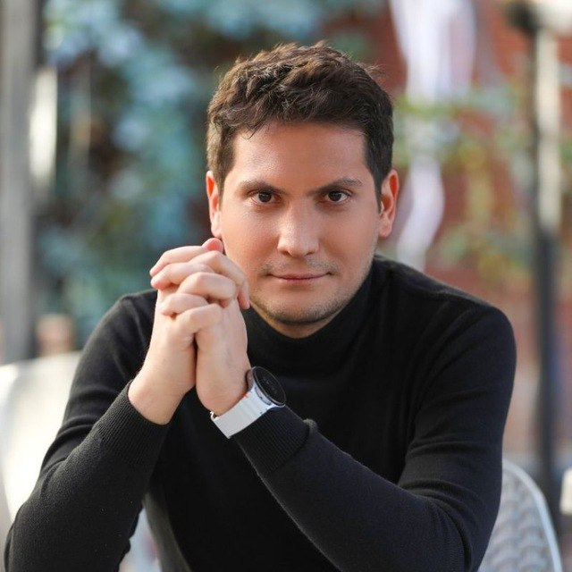
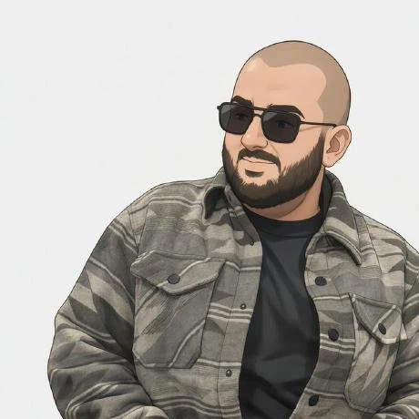
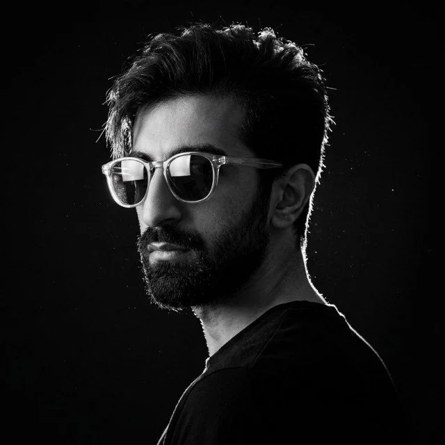
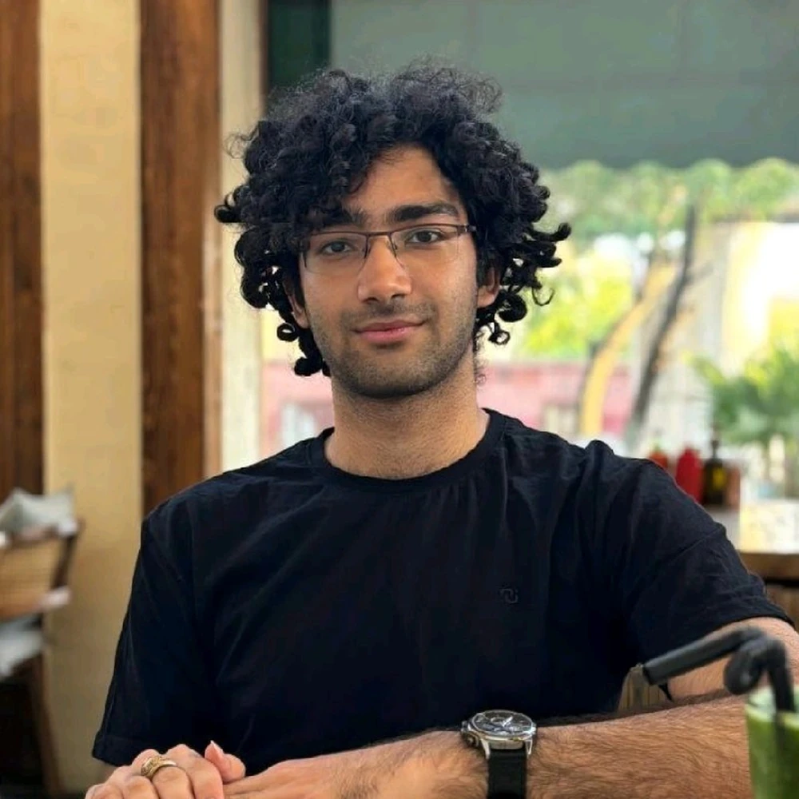
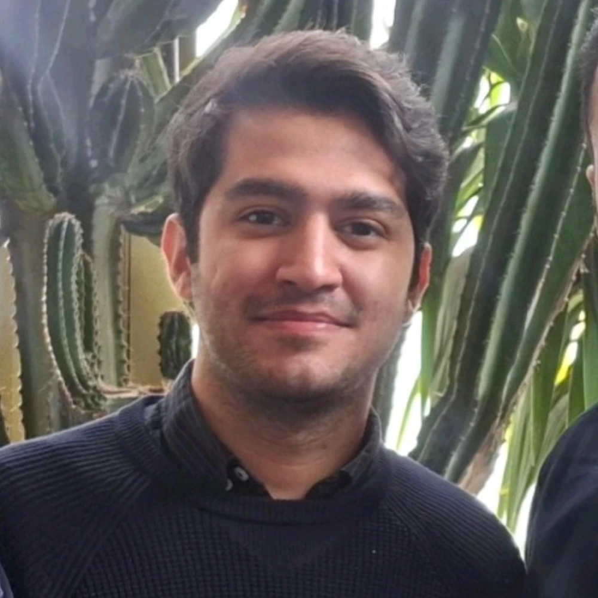
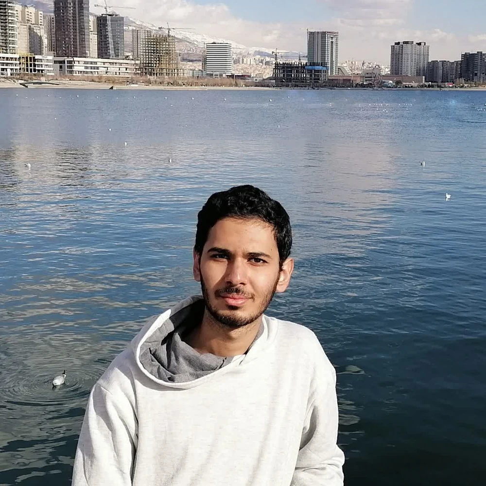
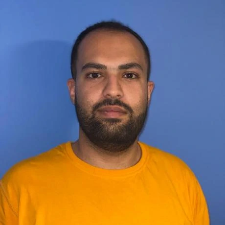
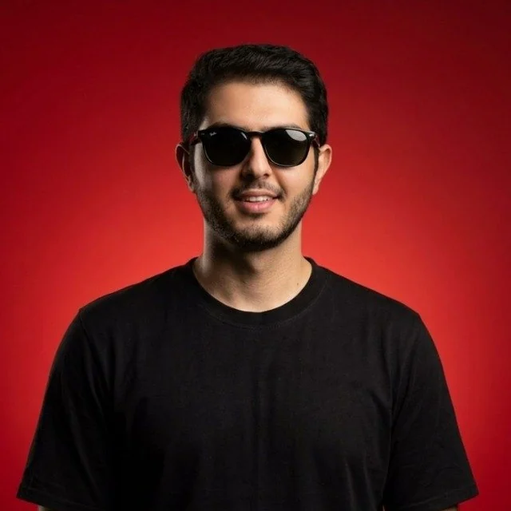
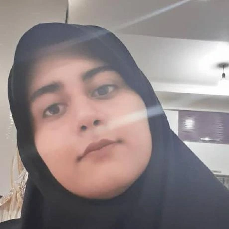
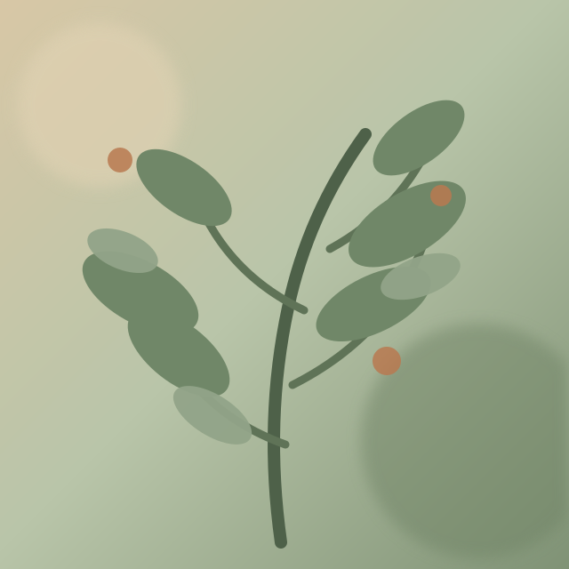
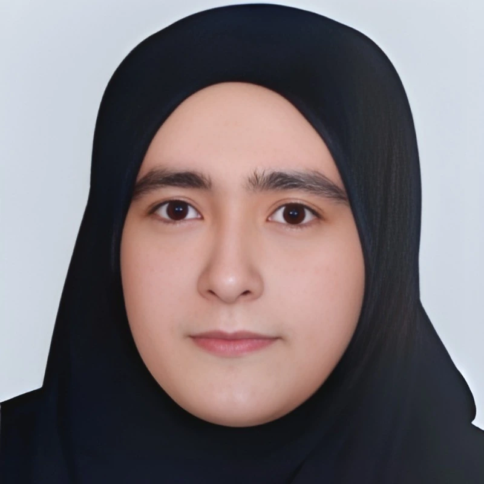
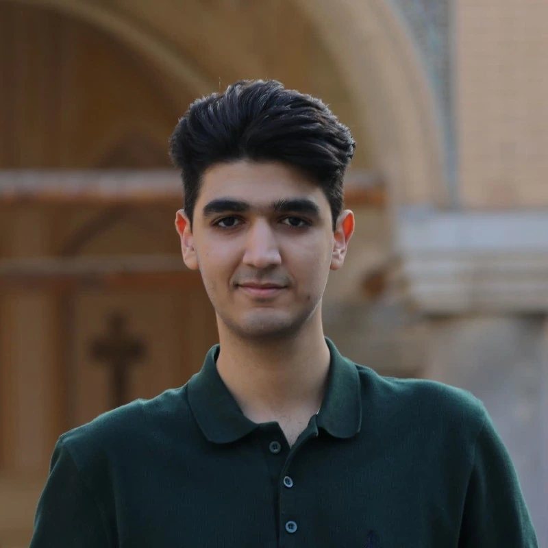
05 / From research group to DINA
DINA was established in 2025, building on Dr. Ashtiani's earlier research at IUST in computational trust, cloud systems, socio-computational systems, context-aware computing, and software refactoring—now extending toward edge computing, federated learning, and LLM-oriented distributed intelligence.
06 / Engineering workspace
The lab's official GitHub organization is the shared home for team repositories and collaborative software work.